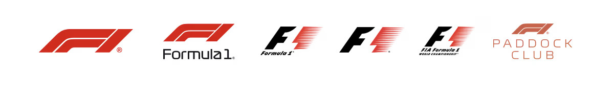

Guidelines
Guidelines for the use of trade marks and intellectual property rights belonging to the Formula 1 companies
Contents
Introduction
FORMULA 1 is the brand used to identify the most prestigious motor racing competition in the world.
The Formula 1 companies own extensive rights in and to the FORMULA 1 brand, including the right to commercially exploit it worldwide. This includes:
i) trade marks, used and/or registered in the UK, EU and internationally in connection with a wide range of goods and services; and
ii) other intellectual property rights.
We offer our promoters, F1 event title partners, global partners, suppliers and licensees the rights to use our intellectual property rights and associate themselves with our brand and we take great care to protect the reputation of our brand by ensuring the proper use of our trade marks and associated intellectual property rights.
As a rule our trade marks cannot be used by third parties without a specific licence from us. However certain trade marks can be used editorially and by fans without requiring a license or permission from us where these Guidelines are adhered to.
“Fans” in this context mean individuals, groups or collectives including for example not for profit institutions such as fan clubs. For the purposes of these guidelines Fans will be those who follow FORMULA 1 events and are active in supporting the races but without doing so in a materially commercial manner, subject to our discretion. A materially commercial manner may include using the FORMULA 1 Rights:
-
for clickbait purposes to promote commercial offers, promotions or activities either related or unrelated to the FORMULA 1 events;
-
to build traffic and/or following to a website and/or social profiles in order to sell goods or services rather than genuinely provide a service for fellow fans;
-
for advertising and/or promotional purposes that is excessively repetitive or otherwise intrusive, such as targeted ads directed at a select user base.
These guidelines (which may be updated from time to time) are provided to help you use our trade marks and related intellectual property rights properly and in a clear and consistent way for this purpose.
As it is impossible to provide guidance on all possible uses, we reserve our right to take action against unauthorised uses which we consider to infringe our rights.
Section 1 - Our Marks
The core trade marks and corporate identities of the Formula 1 companies are listed below. Please note this is not a full list (where we refer to Our Marks in these Guidelines we are referring collectively to the Permitted Word Marks, the Logos, and any other trade marks).
The Logos
You may not use, for any purpose or in any medium, any of our Logos without an express written licence from the Formula 1 companies.
Permitted Word Marks
Permitted Word Marks include: i) Word Marks; and ii) Event Titles, as listed.
i) Word Marks
F1™
Formula 1™
Formula One™
FIA Formula One World Championship™
Grand Prix™
Paddock Club™
Formula One Paddock Club™
F1 Paddock Club™
ii) Event Titles (as of August 2024)
FORMULA 1 ARAMCO PRE-SEASON TESTING 2024
FORMULA 1 GULF AIR BAHRAIN GRAND PRIX 2024
FORMULA 1 STC SAUDI ARABIAN GRAND PRIX 2024
FORMULA 1 ROLEX AUSTRALIAN GRAND PRIX 2024
FORMULA 1 MSC CRUISES JAPANESE GRAND PRIX 2024
FORMULA 1 LENOVO CHINESE GRAND PRIX 2024
FORMULA 1 CRYPTO.COM MIAMI GRAND PRIX 2024
FORMULA 1 MSC CRUISES GRAN PREMIO DEL MADE IN ITALY E DELL'EMILIA-ROMAGNA 2024
FORMULA 1 GRAND PRIX DE MONACO 2024
FORMULA 1 AWS GRAND PRIX DU CANADA 2024
FORMULA 1 ARAMCO GRAN PREMIO DE ESPAÑA 2024
FORMULA 1 QATAR AIRWAYS AUSTRIAN GRAND PRIX 2024
FORMULA 1 QATAR AIRWAYS BRITISH GRAND PRIX 2024
FORMULA 1 HUNGARIAN GRAND PRIX 2024
FORMULA 1 ROLEX BELGIAN GRAND PRIX 2024
FORMULA 1 HEINEKEN DUTCH GRAND PRIX 2024
FORMULA 1 PIRELLI GRAN PREMIO D’ITALIA 2024
FORMULA 1 QATAR AIRWAYS AZERBAIJAN GRAND PRIX 2024
FORMULA 1 SINGAPORE AIRLINES SINGAPORE GRAND PRIX 2024
FORMULA 1 PIRELLI UNITED STATES GRAND PRIX 2024
FORMULA 1 GRAN PREMIO DE LA CIUDAD DE MÉXICO 2024
FORMULA 1 LENOVO GRANDE PRÊMIO DE SÃO PAULO 2024
FORMULA 1 HEINEKEN SILVER LAS VEGAS GRAND PRIX 2024
FORMULA 1 QATAR AIRWAYS QATAR GRAND PRIX 2024
FORMULA 1 ETIHAD AIRWAYS ABU DHABI GRAND PRIX 2024
As covered in Section 3, we allow the Permitted Word Marks to be used to inform, not to brand.
Section 2 – Other Intellectual Property Rights
In addition to Our Marks, we own or have the exclusive rights to commercially exploit other intellectual property rights used in connection with the FIA FORMULA ONE WORLD CHAMPIONSHIP and the FORMULA 1 events. This includes (but is not limited to) intellectual property rights in:
-
Results and Timing data;
-
Official Typeface;
-
Statistics;
-
Still Images;
-
Audio and Audio Visual Content;
-
Official Artworks, Graphics, Assets and Textures;
-
Written Content including articles and news stories used and featured in all our products and services
(the “Other Intellectual Property Rights”).
The Other Intellectual Property Rights should not be used in a manner that is contrary to these Guidelines.
Fair dealing is a limited defence to copyright infringement in the UK, and while other countries may have similar defences, they are not the same. If you intend to rely on fair dealing as a defence to the use of any of the applicable Other Intellectual Property Rights or the Logos you should seek advice in relation to the relevant country.
Where we refer to the FORMULA 1 Rights we are referring to Our Marks and Other Intellectual Property Rights collectively.
If you would like to enquire about licensing any of the FORMULA 1 Rights please contact us at trademarks@f1.com.
If you would like to enquire about licensing any of the rights of the teams or drivers please contact the respective teams and/or drivers’ management teams directly.
Section 3 - Using Our Permitted Word Marks Editorially
Editorial use
Our Permitted Word Marks can be used editorially to report on and provide information about the FORMULA 1 events, including being used on front covers of publications/ website page so long as the use is to inform or report and not to brand the publications/website page and provided that such use does not create any unauthorised association or false affiliation between the Formula 1 companies, and third party businesses, brands, products and/or services.
The following guidelines will help to ensure that you use the Permitted Word Marks properly in editorial copy.
Appearance
Event Titles should always be written in BLOCK CAPITALS. The ™ symbol is not required.
In almost every circumstance e.g. in press releases, advertising materials, strap lines, titles, headlines of news and race reports and website menus, where the surrounding text is written in Sentence case, Word Marks should be either:
-
written in Title Case followed by the ™ symbol; or
-
in BLOCK CAPITALS.
If all the surrounding text is written in BLOCK CAPITALS, then Word Marks should be written in BLOCK CAPITALS, followed by the ™ symbol, to differentiate them from the rest of the text.
As an exception to the above guideline, in editorial copy e.g. body of text, news and race reports, Word Marks should still be written in Title Case or BLOCK CAPITALS, to identify use of a trade mark but the ™ symbol is not mandatory.
Permitted Word Marks should not be stylised or written in a font style that is different to the surrounding text.
Our corporate identity (our company names) should always be written in Title Case. The ™ symbol is not required.
Grammar
Word Marks should be used as attributive modifiers i.e. they should be used to modify a noun for example “FORMULA 1 driver”, “F1 racing”.
Word Marks should not be used as nouns. For example “FORMULA 1 was great this weekend” should be amended to “the FORMULA 1 race was great this weekend”.
Word Marks should never be used in the possessive form. For example “FORMULA 1’s cars”.
Section 4 - Other uses of FORMULA 1 Rights
We want to support our fans and the FORMULA 1 community and are committed to creating a passionate, creative and inclusive environment. This section of our guidelines provides additional guidance on what we allow. We endeavour to take a more relaxed approach when Fans engage in activities concerning FORMULA 1 Rights.
That being said, you must comply with the following Fundamental Principles at all times as set out below:
The Fundamental Principles
Whenever using any of the FORMULA 1 Rights in compliance with these guidelines you must:
-
be clear that what you are doing is not official, approved or endorsed by us or associated or connected with us;
-
be respectful to the FORMULA 1 Rights;
-
not be unlawful, deceptive, obscene, harmful or disparaging;
-
not use our Logos;
-
not integrate Our Marks into any other marks and sufficiently differentiate the use of Our Marks from other marks;
The other uses of FORMULA 1 Rights identified below focus on areas where Fans and the FORMULA 1 community commonly have questions. If you have additional queries or would like guidance on something that is not covered here then please do let us know at trademarks@f1.com.
Internet
As noted above, our Permitted Word Marks can be used editorially on a website so long as the use is to inform or report and not to brand the website.
If the website is dedicated to the FIA FORMULA ONE WORLD CHAMPIONSHIP and is unofficial, such as Fan use, the website should contain the following disclaimer:
This website is unofficial and is not associated in any way with the Formula 1 companies. F1, FORMULA ONE, FORMULA 1, FIA FORMULA ONE WORLD CHAMPIONSHIP, GRAND PRIX and related marks are trade marks of Formula One Licensing B.V.
The disclaimer should be inserted in the footer of the landing and/or home page of the website.
Linking to formula1.com
Linking to the official F1 website www.formula1.com is permitted so long as such use does not create any unauthorised association between the Formula 1 companies and their brands, and any third party or its products or services.
The name of our website must be used in such links, i.e. www.formula1.com, but none of our Logos may be used.
Domain names
Our Permitted Word Marks cannot be incorporated into or registered as domain names for commercialised websites. Use of our Permitted Word Marks in domain names for unlawful and deceptive purposes such as cybersquatting and typosquatting will not be tolerated.
Use within domain names for non-commercialised websites (e.g. Fan sites or news sites) may be tolerated at our discretion.
Our Permitted Word Marks may be used after a domain name as a sub-resource but not as a prefix sub-domain so long as the use does not make any unauthorised association with third parties. For example, www.racingfanatic.com/formula1 is acceptable, www.formula1.racingfanatic.com is not.
Social media and mobile services
Social media platforms and mobile services are an important way for motorsport fans to interact with one another and with FORMULA 1.
Our Permitted Word Marks can be used editorially for non-commercial purposes on social media platforms and on mobile services so long as the use is to inform or report and not to brand.
Non-stylised use of Permitted Word Marks within social media handles, profile names, biographies for non-commercialised accounts (e.g. fan or news accounts) may be tolerated at our discretion.
Subject to our discretion, a company or business that has an account on a social media platform will generally be using that account commercially to promote its goods/services and so will not be considered a non-commercial account by us.
Retweeting, regramming and sharing of official FORMULA 1 content is permitted according to the normal function and guidelines of the relevant social media platforms. Copying official FORMULA 1 content from our social media platforms and reproducing it, in part or in full, outside of these platforms is not permitted, except where the whole content is embedded and links back to the actual official source and such use does not create any unauthorised official association with the Formula 1 companies or FIA FORMULA ONE WORLD CHAMPIONSHIP.
Our Permitted Word Marks may be used for non-commercial social media hashtags for example #F1 #Formula1.
Audio and Audio Visual Content, Still Images and Screenshots
While user generated videos and photographs that relate to FORMULA 1 for non- commercial purposes are generally acceptable, FORMULA 1 event ticket terms may govern recording Audio and Audio Visual Content at FORMULA 1 events and may prohibit such use if the intended purpose is materially commercial rather than genuinely informatory. You should review the terms and conditions of any tickets you buy for FORMULA 1 events and adhere to the rules contained therein.
Our Permitted Word Marks may be used editorially for non-commercial videos about FORMULA 1 so long as the use is to inform and report and not to brand. For example, Permitted Word Marks should not be used as first words for any fan videos that are created, e.g. a fan video entitled “Who should have won the FORMULA 1 Season" is acceptable; “The F1 Vlog: Who should have won the FORMULA 1 Season” is not.
Our Audio and Audio Visual Content is protected by copyright and while we permit sharing on social media platforms and embedding of this content as outlined above, we do not permit the copying and reproduction of our Audio and Audio Visual Content
All rights in still images/ photos/ screenshots are the property of their respective owners which in certain cases may be the Formula 1 companies. Such content should not be reproduced without the consent of the relevant third party rights holder. We recommend you get in touch with reputable stock image providers for further enquiries.
The creation of GIFs and Memes may be acceptable to the relevant copyright owner provided they do not infringe applicable laws and/or these guidelines.
Typefaces and fonts
Our header typefaces and fonts are protected by copyright which is owned by the Formula 1 companies, and cannot be used under any circumstances without an express written license. The Titillium font is a common font available for download via an open source licence. It should not be used in any manner to create an unauthorised association with the Championship or the Formula 1 companies.
Games
Our Permitted Word Marks cannot be used to brand any game. Other Intellectual Property Rights including those from the Formula 1 companies' official games cannot be used in third party games.
eSports
The Formula 1 companies run an official eSports series (https://f1esports.com). The FORMULA 1 Rights cannot be used in connection with any eSports team – including branding of any unofficial eSports team or league - without an express written license.
Apps
Our Permitted Word Marks can be used editorially for non-commercial purposes in relation to apps so long as the use is to inform or report and not to brand, i.e. in the paragraphs of accompanying text to describe the app.
Other Intellectual Property Rights cannot be used in apps. For further guidance on timing data please see Timing Data category below.
Simulators
Motorsport simulators and/or software that simulates auto racing (including those that are digital only or those that incorporate physical elements such as racing car chassis) should not make any use of the FORMULA 1 Rights without an express written license.
All rights in third party names and trade marks which may be used on or in association with motorsport simulators are the property of their respective owners. Such rights should not be reproduced without the consent of the relevant third party rights holder.
Timing Data
Our Statistics, Results and Timing Data is protected by copyright and database rights. Individual pieces of the data can be used incidentally within editorial material to genuinely inform but substantial pieces of the data may not be reproduced or used commercially through scraping or any other means.
Written Content
Our Written Content is protected by copyright and while we permit sharing on social media platforms and embedding of this content as outlined above, we do not permit the copying and reproduction of our Written Content.
Competitions
The Other Intellectual Property Rights cannot be used in relation to competitions and Our Marks cannot be used to brand any competitions.
Ticket Giveaways
FORMULA 1 race tickets cannot be used for prizes in any competitions or giveaways unless authorised by us and/or official race promoters.
Merchandise
FORMULA 1 and its licensees offer a wide range of high quality official merchandise. You cannot use the FORMULA 1 Rights in respect of your own merchandise in any way.
Endorsement or sponsorship
The FORMULA 1 Rights cannot be used in any manner, in any medium, that implies the Formula 1 companies' affiliation with or endorsement, sponsorship, support of any third party or their products or services. They cannot be used in conjunction with an unauthorised third party's brand or logo.
Advertisements and Promotions
The FORMULA 1 Rights cannot be used in advertisements or commercials so as to create an unauthorised association between the Formula 1 companies and a third party or their products or services. For example, in advertorials.
Commercial use
The FORMULA 1 Rights cannot be used on or in relation to any goods/services provided for sale/promotional giveaways without an express licence from the Formula 1 companies. This includes but is not limited to the manufacturing, distributing and promoting of goods or services.
Company name, product name, trade marks, social handles
Our Marks cannot be used or registered as part of a company name, trade name, product name, service name, social media name and/or handle nor can they be used or registered in any trade mark or service mark.
Variations
Our Marks, including variants, misspellings and derivatives, cannot be incorporated into logos, composite logos, website icons, or used to create a brand identity.
Section 5 - Need more help?
For more help and information please contact trademarks@f1.com